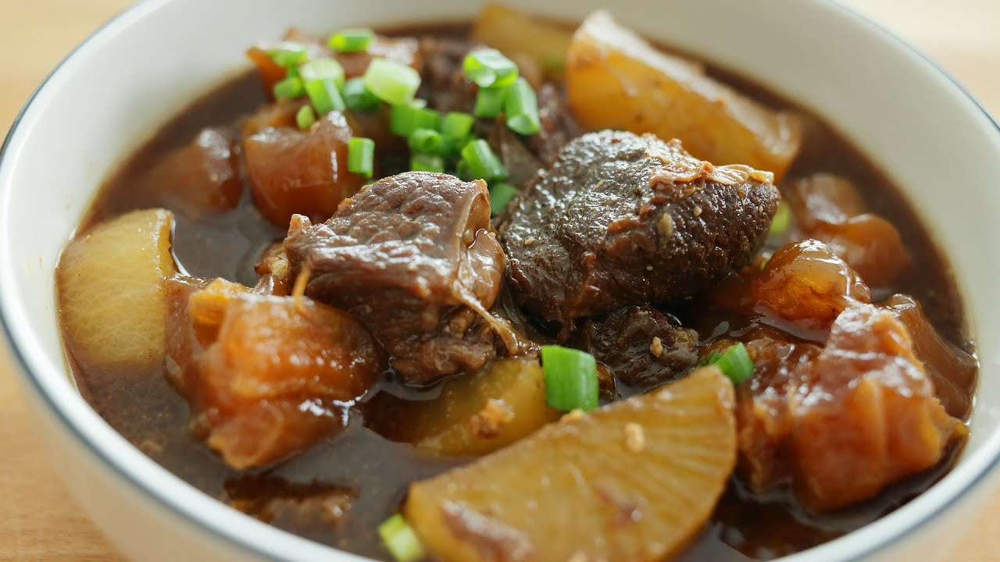

#12 - BRAISED BEEF BISKET - 紅燒牛腩
This is a very popular Cantonese dish. It is usually served on top of a bowl of soup noodle, or with some steaming white rice. A plate of sauté green vegetable is a perfect side dish for this meal. I like to cook this dish when I have time and
keep it in the refrigerator for a quick meal in the next few days.

INGREDIENTS:
- 600g（1斤）beef brisket牛腩
- 600g beef tendon牛筋 (optional)
- 1pc（1 cubic inch) ginger
- 2 TBSP dark soy sauce
- 2 tsp salt
- 1 1/2 star anise
- 1 pc cinnamon stick (桂皮）
- 1 Chinese white turnip (optional)
Directions:
- Cut meat into 1.5-inch cube. Cut the beef tendon a bit bigger.
- Peel the skin of the turnip with a peeler and cut it into chunks about the size of the meat. Set aside for later.
- Bring a pot of water to boil and blanch the meat and tendon for 2 miniutes.
- Rinse in running water to remove scum.
- Put all ingredients into a crock-pot.
- Add water into the crock-pot to cover the meat.
- Bring to boil (it may take 1 hour). Let it cook until meat is tender (depending of the crock-pot, it may take a few hours. At least you don’t have to watch it)
- Remove the tendon from the pot when it is soft. Continue to cook the brisket until soft.
- Remove the cooked brisket from the pot.
- Transfer the liquid into a saucepan and condense the sauce to about a cup.
- Add the cut urnip into the sauce at this point and cook until tender (translucent).
(Serves 1 person)
Note:
- It is easiest to cook this dish in a crock-pot if you have one. But if you don’t’ have, it is OK too. Just cook it in a big pot with more water to cover the meat. Bring to boil, and then simmer for 1-2 hours. Check the water level and the
doneness of the meat every 30 min. The rest of the procedures are the same.